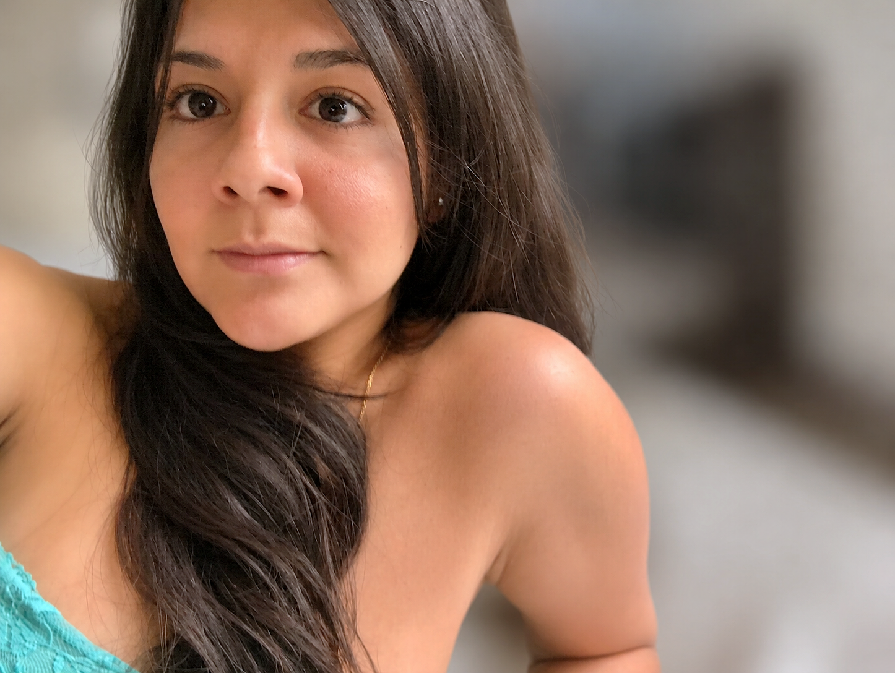

Patricia Malca

Primer amor y amiga de toda la vida
11 de marzo de 1991
Patricia, o simplemente Patty como siempre la he llamado, ocupa un lugar muy especial en mi historia. Nos conocimos durante nuestros años escolares, cuando la vida todavía parecía sencilla y el futuro era poco más que una colección de sueños e ilusiones. Fue en esa etapa donde comenzó una amistad que, sin que yo lo supiera entonces, terminaría convirtiéndose en una de las relaciones más significativas de mi juventud.
Para mí, Patty fue la primera persona que me enseñó lo que significaba enamorarse. Muchos de los recuerdos más importantes de aquellos años tienen su nombre escrito en ellos. Las conversaciones, las risas, las ilusiones propias de la adolescencia y esa sensación única de descubrir sentimientos que hasta entonces eran desconocidos forman parte de una etapa de mi vida que recuerdo con enorme cariño.
Cuando me mudé a Estados Unidos, la distancia física no puso fin a nuestra amistad. Durante años seguimos en contacto a través de correos electrónicos, Messenger y largas conversaciones que se convirtieron en una ventana hacia una parte de mi vida que había quedado atrás. Mientras cada uno construía su propio camino, seguíamos compartiendo historias, experiencias, alegrías y desafíos. Aquellas conversaciones me acompañaron durante algunos de los cambios más importantes de mi vida y ayudaron a mantener viva una conexión que había nacido muchos años antes.
Con el paso del tiempo, nuestras vidas siguieron caminos diferentes. Cada uno creció, cambió y construyó su propia historia. Sin embargo, siempre existió un cariño mutuo y un respeto que sobrevivieron a los años, a la distancia y a las distintas etapas que ambos atravesamos.